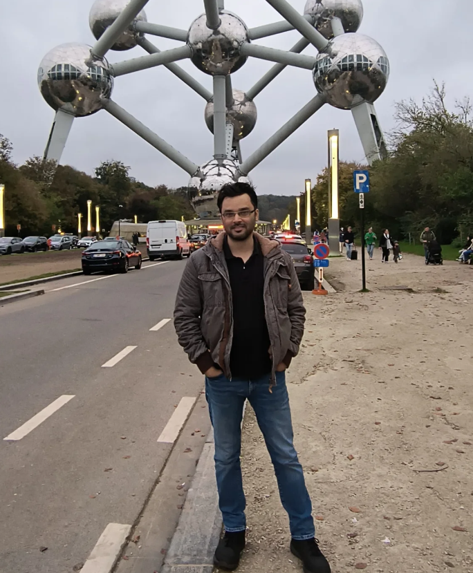

Sequence → Function
Transformer encoders, protein language models (ESM-2, ProtBERT), chaos-game representations, and hashing-based sketches for protein and DNA sequence analysis at scale.
Postdoctoral Research Scientist
Taub Institute · Columbia University Irving Medical Center · New York, NY
I build machine learning methods for biological sequence data — protein function, variant interpretation, and the genetic architecture of aging-related disease.
Currently a postdoc with Giuseppe Tosto at Columbia, where I work on multi-ancestry polygenic risk modeling and longitudinal cognitive trajectories across the ADSP-R5, MESA, FHS, MHAS, and U19 aging cohorts. Previously, I completed my PhD in Computer Science at Georgia State University with Murray Patterson, with research stints at IBM Research, Bosch, Boston College, and Emory.

Transformer encoders, protein language models (ESM-2, ProtBERT), chaos-game representations, and hashing-based sketches for protein and DNA sequence analysis at scale.
Calibration and difficulty-class evaluation of missense pathogenicity predictors (AlphaMissense, EVE, ESM1b); multi-ancestry polygenic risk modeling for Alzheimer's disease.
Longitudinal trajectories, polygenic architecture, and population genetics of aging-related cognitive decline across five major cohorts (ADSP, MESA, FHS, MHAS, U19).
Training dynamics of Transformers, conformal prediction under contamination, optimizer stability theory, and rigorous benchmarking practices for applied ML.
Bioinformatics · under review
A Transformer encoder over per-residue tokens combining ESM-2 / ProtBERT embeddings with a learned 2D positional encoding. Accuracy 0.925 / MCC 0.850 on PDB14189 DNA-binding-protein prediction (+0.192 MCC over PDBP-Fusion).
Bioinformatics · under review
Gene-stratified evaluation of nine VEPs on 17,185 ClinVar variants. AlphaMissense reaches AUC 0.955 but ECE 0.150; on a reproducible disagreement class EVE collapses to AUC 0.493. A meta-predictor with isotonic calibration repairs both.
· under review · arXiv
A sharp training window decides Transformer reasoning vs memorization. Two-timescale theoretical analysis with seed-controlled empirics; robust across depth and optimizer.
Bioinformatics · under review
k-mer spectrum kernel sketching with closed-form bias/variance, Johnson–Lindenstrauss concentration, and excess-risk bounds. Scales sequence ML to multi-million-sequence regimes.
Nature Scientific Reports · IF 4.9 · paper
Information Sciences · IF 8.1 · paper